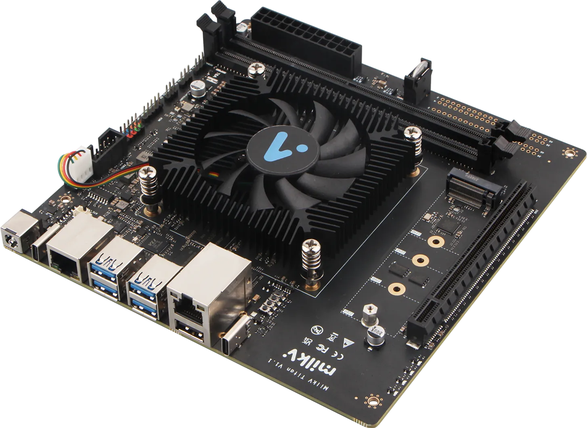

用 AI 智能体
在 RISC-V 上做开发
第一课 · 先看清全景：Linux · RISC-V · DP1000 · 大模型与智能体
先看两条今年的新闻
这四天，你会把这两件事同时拿到手里。
我们的舞台：一台 RISC-V 电脑，加一个 AI 助手
这四天，你会认识一台国产 RISC-V 小电脑（芯片 + Linux），并学会用 AI 智能体在它上面做开发。下面两层是你要开发的机器，最上面一层，是帮你开发的 AI。
今天四站：① Linux · ② RISC-V 架构 · ③ DP1000 芯片 · ④ 大模型与智能体
这四天，我们怎么走
认识这台机器和这个 AI，下午一起把开发环境搭起来。
Linux 命令行、IP、SSH——从你的电脑远程住进板子里。
让智能体住进 Titan，学会给它派活、看它干活。
用智能体在板子上做一个属于你自己的小项目。
所以今天听不懂细节没关系——记住"有这么个东西"就够了。
先拆开看：一台电脑里有什么
不管是你的笔记本、你的手机，还是等下要发到你手上的这块板子，里面永远是这四样东西在配合。
CPU 处理器 —— 大脑
负责算。Titan 上是 UR-DP1000，8 个核，等下细讲。
内存 DDR4 —— 书桌
正在用的东西摊在桌上，拿得飞快，但一断电就全没了。
硬盘 M.2 SSD —— 书柜
关机也留着。系统、你写的代码，都住在这儿。
网口 —— 门
和外面世界说话的唯一通道。第 2 天你就是从这道门进去的。
这四样谁都有。Titan 特别的地方只有一个：它的大脑，用的是 RISC-V。
先说 Linux：
这台机器的操作系统
芯片是硬件，还得有个操作系统来指挥它、把程序跑起来。我们这台 RISC-V 电脑用的，就是 Linux。
代码人人可看、可改、可免费用——和等下的 RISC-V 是同一种精神。
安卓手机、服务器、超算、跑 AI 的机器……几乎都在用 Linux。
装的正是 Ubuntu / Debian——都是 Linux。
操作系统：这台机器的大管家
你双击一个图标就能打开程序，背后其实有个"管家"在忙。它一直做三件事：
排班：分配资源
8 个核、几十 GB 内存，谁先用、用多久、用多少——管家说了算。
记账：管好文件
你的照片、代码在硬盘的哪个角落，它记着，你只要知道文件名。
翻译：驱动硬件
网口、硬盘、USB 各说各的"方言"，管家全都会翻译。
我们的板子请来的这位管家，名字叫 Linux。
Linux：一个大学生的
业余项目
它不是哪家大公司立项做出来的。它开头只是一个 21 岁芬兰学生，暑假在宿舍里写着玩的东西。
记住这个词——等下讲 RISC-V，走的是同一条路。
Ubuntu、Debian、Fedora——它们什么关系？
常听到这些名字，其实它们共用同一台"发动机"（Linux 内核），只是不同厂家组装的整车：预装什么软件、长什么样、怎么装新程序，各有各的风格。
Ubuntu
最流行、资料最多，新手友好。
Titan 官方首选的系统
Debian
Ubuntu 的"爸爸"，稳重、保守，服务器上常见。
Fedora
喜欢尝鲜，新技术先在这里落地。
为什么还要敲命令？
鼠标不香吗
因为这四天你要打交道的机器，大多数时候连屏幕都没有。
能——从自己的电脑远程敲命令，这正是下一课要练的 SSH。
你只能从自己的电脑远程连过去，用文字指挥它。
同一行字，今天跑和明天跑一样，一台机器和一万台机器也一样。
智能体帮你干活，靠的就是替你敲命令、看返回。你懂命令，才验收得了它的活。
CPU 是怎么
"听懂"命令的？
芯片其实只认一小套最基础的动作：加一下、把数据搬进来、再存回去…… 这套"动作清单"就叫 指令集架构（ISA）。
- 🍽️像餐厅的一份"菜单"厨房（CPU）只会做菜单上的菜；点菜（写程序）也只能照着点
- 🤝软件和硬件的"约定"大家都照这套语言来，芯片就能跑对应的程序
你写的每一行代码，最后都被翻译成这样一条条"基础动作"。
为什么手机上的 App，装不到电脑上？
同样一句"把两个数加起来"，翻译成机器听得懂的话，不同架构说的是不同方言：
所以软件必须"为这个架构编译过"才能跑——这就是为什么大家老在说 RISC-V 的"生态"。
RISC 是什么意思？——菜单短，但够用
菜单很长，还有不少"一道菜顶三道"的复杂大菜。
点菜方便，但厨房（芯片）要能做几千道菜，设计非常复杂、耗电也大。
菜单短而整齐，复杂的菜用几道简单的菜拼出来。
厨房小、好造、省电，还容易验证有没有做错。
它也是一个
暑期项目
2010 年夏天，加州大学伯克利分校的几位老师和学生想找一套"干净、能自由使用"的指令集来做研究。找了一圈没找到，于是决定自己做一个——原计划，三个月做完。
而你们，现在也正在过一个暑期营。
RISC-V：一套开放、免费的指令集
过去主流指令集不是 Intel 的 x86，就是 ARM——想造芯片，得付高昂授权费、还处处受限。RISC-V 反过来：开源、免费、谁都能用。
x86
Intel / AMD 主导，几乎不对外授权
电脑 · 服务器
ARM
要付授权费、按规矩使用
手机 · 平板
RISC-V
开放免费、可自由扩展
从单片机到服务器 · 我们的板子
这不是理想主义：高通、英伟达、Meta、谷歌、阿里今年都已经把它用进了自家产品——不是试试看，是真在出货。
为什么说 RISC-V 是乐高？
别家的指令集是"整套买"。RISC-V 是一小块基础积木，再按需要往上拼扩展——做耳机就拼小一点，做服务器就拼大一点。
RV64GCBHX ＝ 64 位 + 常用功能包 + 可自由扩展。
这正是我们板子上 UR-DP1000 的规格——现在你已经能读懂它了。
不过自由也有代价：拼法太多，软件就不知道该按哪套写。这个麻烦怎么解决，两页之后见分晓。
为什么大家都在押注 RISC-V？
正在成为潮流
从耳机、单片机到数据中心，越来越多芯片改用 RISC-V。
自主可控
不必依赖国外授权，是国产芯片的重要机会——我们的 DP1000 就是国产 RISC-V。
生态在长大
编译器、Linux、各种 AI 框架都陆续支持 RISC-V。
特别适合学习
开放、资料公开，正好拿来教学和动手研究——就像现在。
这四条不是口号。接下来三页，我们拿今年真实发生的事，把前三条挨个验一遍。
"正在成为潮流"——有多潮？
笔记本电脑
DC-ROMA、MUSE Book 等 RISC-V 笔记本已经在卖；还有能直接换进 Framework 笔记本的 RISC-V 主板。
手机系统
2026 年 2 月 FOSDEM 大会上，安卓（AOSP）移植到 RISC-V 已从"实验性"走向"能真用"。
航天与边缘 AI
欧洲正把它用在卫星和路边的 AI 盒子里——省电、可裁剪、还能自己验证。今年 7 月的欧洲峰会就在谈这些。
桌面工作站
比如——就是等下发到你面前的这块 Milk-V Titan。
"生态在长大"——软件正在追上来
还记得刚才那两种"方言"吗？芯片造出来只是一半，一个架构能不能活，看的是有没有人愿意为它写软件。
看科技新闻养成这个习惯，比记住新闻本身有用。
"自主可控"——为什么中国特别在意它
而你们这四天要碰的 UR-DP1000，就是这条路上已经能买到的产品之一。
UR-DP1000
把 RISC-V 变成真芯片
指令集是"设计图纸"，芯片才是造出来的"实物"。DP1000 就是一颗国产的、基于 RISC-V 的处理器，由 UltraRISC 出品。
它是 2025 年下半年最受关注的三颗高性能 RISC-V 处理器之一——不是老芯片，是刚出炉的。
一颗芯片，怎么从沙子变出来
指令集（RISC-V）只是"图纸用的语言"。真要变成能拿在手里的东西，得走完这五步：
你写的每一行代码，最后都是在指挥这些开关，一秒钟开关几十亿次。
8 个核，
到底快在哪？
一个核 ＝ 一个厨师。8 核，就是厨房里站了 8 个厨师。
- ⚡单核快 = 厨师手快决定"打开一个网页、跑一个程序"有多利索
- 👥核多 = 厨师多编译几百个文件、同时跑很多任务时，人多力量大
UR-DP1000 的成绩单
- 🧩8 核，分成两组，各 4 个每组配 4MB 三级缓存，两组共 16MB 末级缓存——缓存＝厨师手边的备菜台
- 📈比同级国产 RISC-V 芯片单核约快 30%，多核接近 2 倍（GeekBench 5 对比 ESWIN EIC7702X）
- 🔋空载约 14W，满载约 30W比一盏台灯多一点，可以整天开着不心疼
Milk-V Titan：我们要用的开发板

一块 MINI-ITX 的 RISC-V "小电脑"，DP1000 就是它的心脏。接上网线、电源，它就是一台完整的 Linux 主机。
后面几课：在它上面装好 Linux，再用 AI 智能体在上面做开发。
认接口：板子上每个口是干嘛的
下午你要亲手接线，先把这几个口认清楚，省得插错。
板子的大门。第 2 天你就是从这里 SSH 进去的。
硬盘住这儿。系统和你写的代码都存在上面。
和台式机同款。将来可以插显卡或加速卡。
键盘、鼠标、U 盘。
急救通道：系统起不来、网也不通的时候，只能靠它看到底怎么了。
接电源。插之前先确认电源是关的。
它到底算什么级别的机器？
| 树莓派 5 | 普通笔记本 | Milk-V Titan | |
|---|---|---|---|
| 架构 | ARM（要授权费） | x86（不对外授权） | RISC-V（开放免费） |
| 处理器 | 4 核 | 常见 8～16 核 | 8 核 @ 最高 2.0GHz |
| 内存上限 | 16GB | 16～64GB | 64GB DDR4（支持 ECC，自动纠错） |
| 能插显卡吗 | 不能 | 一般不能 | 能，PCIe 4.0 ×16 |
| 价格 | 约 ¥600 起 | ￥4000 起 | $329（约 ¥2400） |
而且用的是谁都能用的架构。
大模型（LLM）
是什么？
用海量文本（几乎整个互联网）训练出来的超大"语言大脑"。它的核心本领简单得惊人：看着前文，猜下一个字。
- 📚读得多像读遍了图书馆，你起个头，它能自然地接下去
- ✨练大了会"涌现"练到足够大，竟然会翻译、写代码、推理、答题
一个字一个字这样接下去，就写出了整段话。
它是怎么"学会"的？
大模型的一生，其实只分两种时刻：读书和答题。
把海量文本喂给它，让它反复练"猜下一个字"。
要用成千上万张 GPU 卡、连着跑好几个月、烧掉数亿元。一辈子只做有限的几次。
你问一句，它算一遍，给你答案。
几秒钟的事。全世界每天要发生几十亿次——你用的每一次都是这个。
这就是为什么它不知道今天的新闻——也是下一页要说的"天花板"。
它的书桌
有多大？
模型读东西不是一个字一个字看，而是按 token（词块）看。中文里，一个汉字大约是 1～2 个 token。
桌子摊满了，早先的内容就得先收起来——它就"忘"了。
同样一个问题，把报错原文、文件内容一起给它，和只说"报错了"，结果天差地别。
阶段性让它总结一下"我们做到哪了"，比让它硬扛一大堆旧内容有用。
"怎么把话说清楚"，比"知道它是怎么造的"实用得多。
但大模型有个"天花板"
它很会"说"，可它只是输出文字——不知道现在几点、算不准复杂的账、连不上网，也没法真正动你的电脑。
不知道"此刻"
训练之后发生的事、现在的天气，它都不知道
没有"手脚"
不能自己查资料、跑程序、控制硬件
只答一句
你问一句它答一句，不会自己一步步把事办完
智能体 = 大模型 + 手脚和工具
一个"超级大脑"
你问一句，它答一句
大脑 + 会用工具的手 + 记得住事的笔记本
给它一个目标，它自己拆解、动手、一步步尝试（也会出错，要你把关）
在我们的课里，这双"手"在 Titan 板子上敲命令，那颗"大脑"（大模型）常常在云端——并不是塞在板子里跑的。
智能体怎么自己干活？
它把一个大目标，拆成"想一步、做一步、看一步"的小循环，转着转着就把事办成了。
一个回合，
长这样
右边是一次真实的派活。你只说了第一句，剩下的都是它自己转圈转出来的。
这正是"智能体"和"聊天机器人"的分界线。
先别急着交——AI 报"成功"不等于真的对，得你自己核一眼。
今天的代码，是这样写出来的
AI 负责敲，人负责看懂、判断、拍板。这四天真正要练的，是后面那半句。
为什么用 AI 智能体 来做开发？
零基础也能上手
不会写的地方，让 AI 帮你写、帮你解释，边做边学。
报错时有它陪你查
把报错丢给它，它帮你找可能的原因、给出改法——但改对没有，得你跑一遍才算数。
你出想法，它写草稿
繁琐的编码先交给它打草稿，你专注在"想做什么"，再把关它写得对不对。
整个行业都在转向它
2026 年，大家比的已经不是"谁模型分数高"，而是智能体能不能真把一件事做完。
但它不是魔法——先泼一盆冷水
会一本正经地胡说
它可能编出根本不存在的命令、文件名、网址，语气还特别肯定。
会越改越乱
一个错误卡住时，它可能一路绕圈，把本来好的地方也改坏。
别把它当拐杖
全丢给它，代码是有了，你什么也没学到——面试和考试可不让带它。
所以你的角色是队长，不是观众：派活、盯着、验收。
第 3 讲和第 4 讲，会专门教你怎么给它写任务书、怎么检查它交的活。
为什么是现在，为什么是你们
RISC-V 十几年前还只是伯克利的暑期项目，今年已经在谈数据中心、卫星和 AI 盒子。
开放意味着：小团队、学校、甚至高中生，也能碰到最底层的东西。
2026 年，整个行业比的已经不是"谁模型分数高"，而是智能体能不能把一件事真做完。
而且它正在从屏幕里走出来，进到机器人、汽车和各种设备里。
你这四天做的事——用智能体在 RISC-V 上开发——刚好就站在这个路口上。
回到全景：一台机器 + 一个 AI 助手
接下来：把环境搭起来
今天下午和之后的实验课，我们要一步步做完这五件事：
- 1认板子、接线电源、网线，必要时再接上 Type-C 调试串口——就是刚才那张接口图
- 2开机，确认能进 Linux看到那个等你敲字的光标，就算成功了一半
- 3拿到板子的 IP 地址IP 就是这台机器在网络里的门牌号，没有它你找不到它
- 4从自己的电脑 SSH 连上去SSH＝一条加密的隧道，从你的键盘直通板子
- 5装好后面几天要用的工具包括第 3 天要请进板子的那位 AI 智能体
下午有一半时间，就是专门用来解决"卡住"的——卡住了请举手，别自己憋着。
最后，给你三条建议
多问，别憋着
你现在是"零基础"，这是你这辈子问"这是什么"最不吃亏的时候。
一定亲手敲一遍
看懂 ≠ 会。同一条命令，看老师敲和自己敲，是两回事。
别怕报错
报错是电脑在跟你说话，它已经告诉你哪儿错了——而且现在你还有 AI 帮你读。
而是"碰到不会的东西，我知道该怎么开始"。
谢谢！
下一课，我们就动手 🚀
今天认识了整个全景，下一课开始，就真的连上板子、动手做开发。
milkv.io/titan
missing-semester-cn.github.io
- 🐧Linux这台机器的操作系统——开源、无处不在
- 🧩RISC-V 架构开放免费的指令集——芯片界的"开源精神"
- 🔩UR-DP1000 / Titan国产 8 核 RISC-V 芯片，装进我们的开发板
- 🤖大模型与智能体你的 AI 开发助手——帮你写代码、查错、做开发